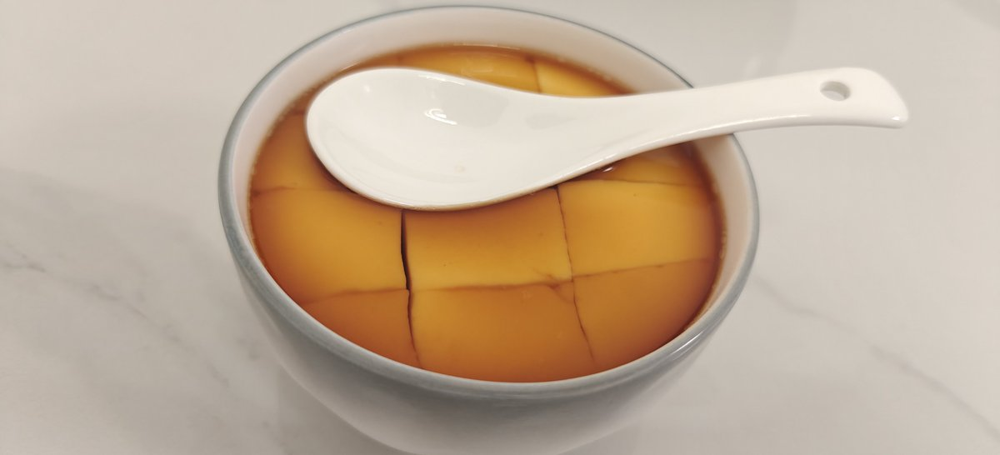

𝓒𝓻𝓮𝓪𝓶 𝓒𝓱𝓮𝓮𝓼𝓮
@LastTrouvaille
@AkiHaneQvQ 收藏了

秋羽Akihane
@AkiHaneQvQ
蒸蛋笔记
蛋液打加少许食盐(也可以加点鸡精)打发到气泡绵密，之后一边缓慢加入蛋液两倍体积的热水一边搅拌，之后用厨房纸和勺子撇出所有泡沫
锅中水烧开后转小火，至气泡均匀少量升腾，把碗放进去，盖上盖子，露出一个小缝隙，小火十分钟，后开盖根据熟度选择关火闷两到三分钟或加热
无气泡，好吃 https://t.co/UmAJzdADQD